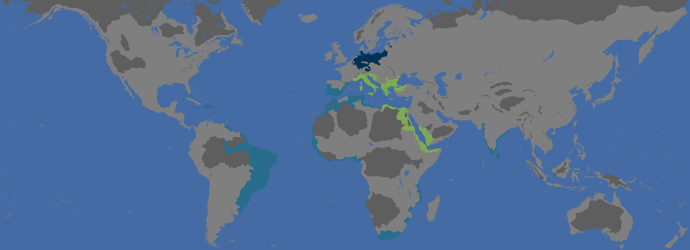
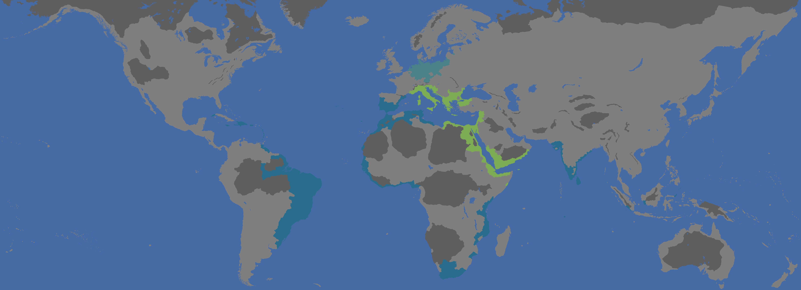
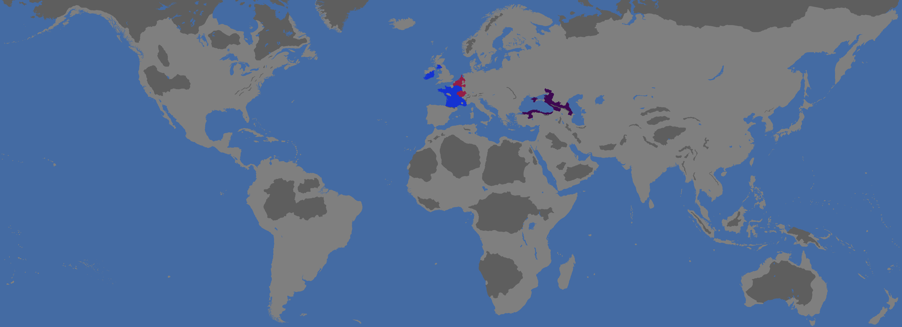
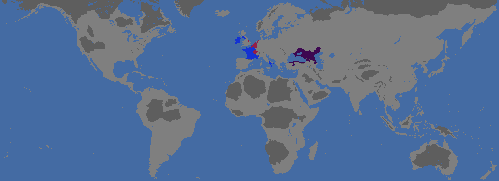
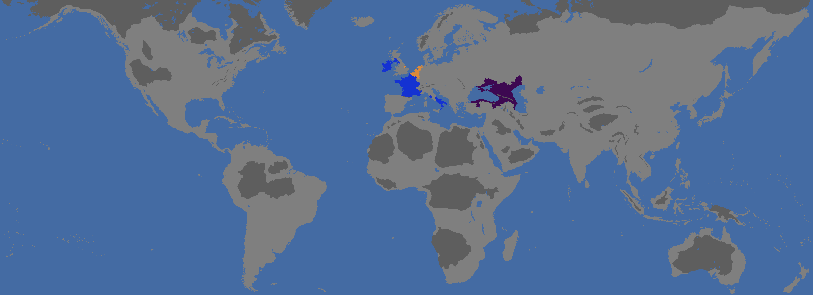
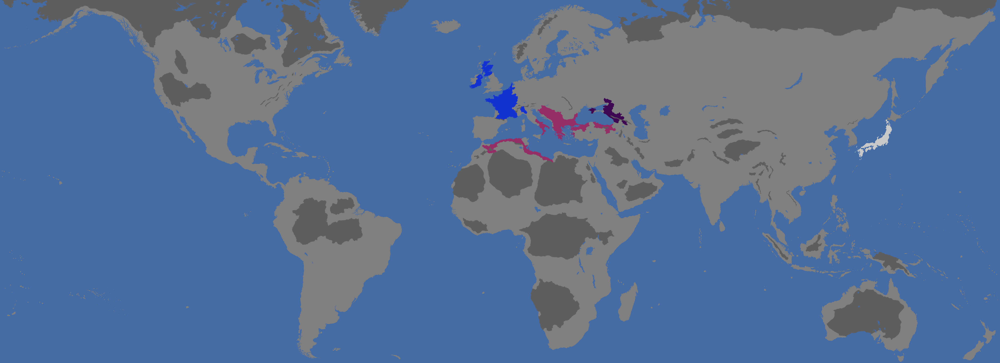
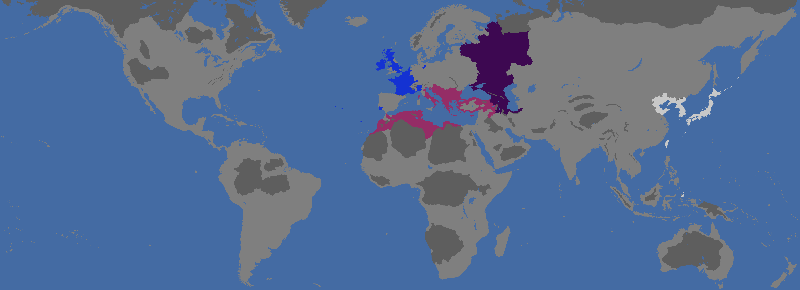

How to use:
Hit CTRL & F on the keyboard then type what you save you want based off player name or date or game sessions.
You may have to scroll the page abit as well if it hasnt loaded...
**Session save - game 01** ``` Tags: Prussia, Italy, Portugal Players: Asephri, Zatoz, Jacksonat Date: 29/01/25 ```
 save file
save file
**Session save - game 01** ``` Tags: Prussia, Italy, Portugal Players: Asephri, Zatoz, Jacksonat Date: 01/02/25 ```
 save file**Session save - game 01** ``` Tags: Prussia, Italy, Portugal Players: Asephri, Zatoz, Jacksonat Date: 17/02/25 ```
save file**Session save - game 01** ``` Tags: Germany, Italy, Portugal Players: Asephri, Zatoz, Jacksonat Date: 02/03/25 ```
 save file**Session save - game 02** ``` Tags: Burgundy, France, Theodoro Players: Asephri, Jacksonat, Harys Date: 11/03/25 ```
 save file**Session save - game 02** ``` Tags: Burgundy, France, Theodoro Players: Asephri, Jacksonat, Harys Date: 5/04/25 ```
 save file**Session save - game 02** ``` Tags: Burgundy, France, Theodoro Players: Asephri, Jacksonat, Harys Date: 5/04/25 ```
 save file**Session save - game 03-c** ``` Tags: Byzantium, France, Uesugi, Theodoro Players: Asephri, Jacksonat, Zatoz, Rinsa Date: 15/04/25 ```
 save file**Session save - game 03-c** ``` Tags: Byzantium, France, Japan, Gothia Players: Asephri, Jacksonat, Zatoz, Rinsa Date: 16/04/25 ```
 save file